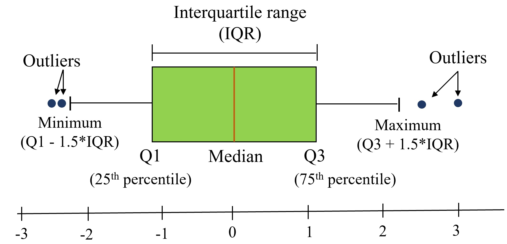

import pandas as pd
import numpy as np6 Data visualization
It is generally easier for humans to comprehend information with plots, diagrams and pictures, rather than with text and numbers. This makes data visualizations a vital part of data science. Some of the key purposes of data visualization are:
- Data visualization is the first step towards exploratory data analysis (EDA), which reveals trends, patterns, insights, or even irrugalarities in data.
- Data visualization can help explain the workings of complex mathematical models.
- Data visualization are an elegant way to summarise the findings of a data analysis project.
- Data visualizations (especially interactive ones such as those on Tableau) may be the end-product of data analytics project, where the stakeholders make decisions based on the vizualizations.
We’ll use a couple of libraries for making data visualizations - matplotlib and seaborn. Matplotlib is mostly used for creating relatively simple two-dimensional plots. Its plotting interface that is similar to the plot() function in MATLAB, so those who have used MATLAB should find it familiar. Seaborn is a recently developed data visualization library based on matplotlib. It is more oriented towards visualizing data with Pandas DataFrame and NumPy arrays. While matplotlib may also be used to create complex plots, seaborn has some built-in themes that may make it more convenient to make complex plots. Seaborn also has color schemes and plot styles that improve the readability and aesthetics of malplotlib plots. However, preferences depend on the user and their coding style, and it is perfectly fine to use either library for making the same visualization.
6.1 Matplotlib
Let’s visualize the life expectancy of different countries with GDP per capita. We’ll read the data file gdp_lifeExpectancy.csv, which contains the GDP per capita and life expectancy of countries from 1952 to 2007.
gdp_data = pd.read_csv('./Datasets/gdp_lifeExpectancy.csv')
gdp_data.head()| country | continent | year | lifeExp | pop | gdpPercap | |
|---|---|---|---|---|---|---|
| 0 | Afghanistan | Asia | 1952 | 28.801 | 8425333 | 779.445314 |
| 1 | Afghanistan | Asia | 1957 | 30.332 | 9240934 | 820.853030 |
| 2 | Afghanistan | Asia | 1962 | 31.997 | 10267083 | 853.100710 |
| 3 | Afghanistan | Asia | 1967 | 34.020 | 11537966 | 836.197138 |
| 4 | Afghanistan | Asia | 1972 | 36.088 | 13079460 | 739.981106 |
6.1.1 Scatterplots and trendline
Now, we’ll import the pyplot module of matplotlib to make plots. We’ll use the plot() function to make the scatter plot, and the functions xlabel() and ylabel() for lablelling the plot axes.
import matplotlib.pyplot as pltQ: Make a scatterplot of Life expectancy vs GDP per capita.
#Making a scatterplot of Life expectancy vs GDP per capita
x = gdp_data.gdpPercap
y = gdp_data.lifeExp
plt.plot(x,y,'o') #By default, the plot() function makes a lineplot. The 'o' arguments specifies a scatterplot
plt.xlabel('GDP per capita') #Labelling the horizontal X-axis
plt.ylabel('Life expectancy') #Labelling the verical Y-axisText(0, 0.5, 'Life expectancy')
From the above plot, we observe that life expectancy seems to be positively correlated with the GDP per capita of the country, as one may expect. However, there are a few outliers in the data - which are countries having extremely high GDP per capita, but not a correspondingly high life expectancy.
Sometimes it is difficult to get an idea of the overall trend (positive or negative correlation). In such cases, it may help to add a trendline to the scatter plot. In the plot below we add a trendline over the scatterplot showing that the life expectancy on an average increases with increasing GDP per capita. The trendline is actually a linear regression of life expectancy on GDP per capita. However, we’ll not discuss linear regression is this book.
Q: Add a trendline over the scatterplot of life expectancy vs GDP per capita.
#Making a scatterplot of Life expectancy vs GDP per capita
x = gdp_data.gdpPercap
y = gdp_data.lifeExp
plt.plot(x,y,'o') #By default, the plot() function makes a lineplot. The 'o' arguments specifies a scatterplot
plt.xlabel('GDP per capita') #Labelling the horizontal X-axis
plt.ylabel('Life expectancy') #Labelling the verical Y-axis
#Plotting a trendline (linear regression) on the scatterplot
slope_intercept_trendline = np.polyfit(x,y,1) #Finding the slope and intercept for the trendline
compute_y_given_x = np.poly1d(slope_intercept_trendline) #Defining a function that computes the 'y' given 'x' for the trendline
plt.plot(x,compute_y_given_x(x)) #Plotting the trendline
The above plot shows that our earlier intuition of a postive correlation between Life expectancy and GDP per capita was correct.
We used the NumPy function polyfit() to compute the slope and intercept of the trendline. Then, we defined an object compute_y_given_x of poly1d class and used it to compute the trendline.
6.1.2 Subplots
There is often a need to make a few plots together to compare them. See the example below.
Q: Make scatterplots of life expectancy vs GDP per capita separately for each of the 4 continents of Asia, Europe, Africa and America. Arrange the plots in a 2 x 2 grid.
#Defining a 2x2 grid of subplots
fig, axes = plt.subplots(2,2,figsize=(15,10))
plt.subplots_adjust(wspace=0.4) #adjusting white space between individual plots
#Making a scatterplot of Life expectancy vs GDP per capita for each continent
continents = np.array([['Asia', 'Europe'], ['Africa', 'Americas']])
#Looping over the 2x2 grid
for i in range(2):
for j in range(2):
x = gdp_data.loc[gdp_data.continent==continents[i,j],:].gdpPercap
y = gdp_data.loc[gdp_data.continent==continents[i,j],:].lifeExp
axes[i,j].plot(x,y,'o')
axes[i,j].set_xlim([gdp_data.gdpPercap.min(), gdp_data.gdpPercap.max()])
axes[i,j].set_ylim([gdp_data.lifeExp.min(), gdp_data.lifeExp.max()])
axes[i,j].set_xlabel('GDP per capita for '+ continents[i,j])
axes[i,j].set_ylabel('Life expectancy for '+ continents[i,j]) 
We observe that for each continent, except Africa, initially life expectancy increases rapidly with increasing GDP per capita. However, after a certain threshold of GDP per capita, life expectancy increases slowly. Several countries in Europe enjoy a relatively high GDP per capita as well as high life expectancy. Some countries in Asia have an extremely high GDP per capita, but a relatively low life expectancy. It will be interesting to see the proportion of GDP associated with healthcare for these outlying Asian countries, and European countries.
We used the subplot function of matplotlib to define the 2x2 grid of subplots. The function subplots_adjust() can be used to adjust white spaces around the plot. We used a for loop to iterate over each subplot. The axes object returned by the subplot() function was used to refer to individual subplots.
6.1.3 Overlapping plots with legend
We can also have the scatterplot of all the continents on the sample plot, with a distinct color for each continent. A legend will be required to identify the continent’s color.
continents = np.array([['Asia', 'Europe'], ['Africa', 'Americas']])
for i in range(2):
for j in range(2):
x = gdp_data.loc[gdp_data.continent==continents[i,j],:].gdpPercap
y = gdp_data.loc[gdp_data.continent==continents[i,j],:].lifeExp
plt.plot(x,y,'o',label = continents[i,j])
plt.xlim([gdp_data.gdpPercap.min(), gdp_data.gdpPercap.max()])
plt.ylim([gdp_data.lifeExp.min(), gdp_data.lifeExp.max()])
plt.xlabel('GDP per capita')
plt.ylabel('Life expectancy')
plt.legend()<matplotlib.legend.Legend at 0x1d09bf00040>
6.2 Pandas
Matplotlib is low-level tool, in which different components of the plot, such as points, legend, axis titles, etc. need to be specified separately. The Pandas plot() function can be used directly with a DataFrame or Series to make plots.
6.2.1 Scatterplots and lineplots
#Plotting life expectancy vs GDP per capita using the Pandas plot() function
gdp_data.plot(x = 'gdpPercap', y = 'lifeExp', kind = 'scatter')<AxesSubplot:xlabel='gdpPercap', ylabel='lifeExp'>
Note that with matplolib, it will take 3 lines to make the same plot - one for the scatterplot, and two for the axis titles.
Let us re-arrange the data to show other benefits of the Pandas plot() function. Note that data resphaping is explained in Chapter 8 of the book, so you may ignore the code block below that uses the pivot_table() function.
#You may ignore this code block until Chapter 8.
mean_gdp_per_capita = gdp_data.pivot_table(index = 'year', columns = 'continent',values = 'gdpPercap')
mean_gdp_per_capita.head()| continent | Africa | Americas | Asia | Europe | Oceania |
|---|---|---|---|---|---|
| year | |||||
| 1952 | 1252.572466 | 4079.062552 | 5195.484004 | 5661.057435 | 10298.085650 |
| 1957 | 1385.236062 | 4616.043733 | 5787.732940 | 6963.012816 | 11598.522455 |
| 1962 | 1598.078825 | 4901.541870 | 5729.369625 | 8365.486814 | 12696.452430 |
| 1967 | 2050.363801 | 5668.253496 | 5971.173374 | 10143.823757 | 14495.021790 |
| 1972 | 2339.615674 | 6491.334139 | 8187.468699 | 12479.575246 | 16417.333380 |
We have reshaped the data to obtain the mean GDP per capita of each continent for each year.
The pandas plot() function can be directly used with this DataFrame to create line plots showing mean GDP per capita of each continent with year.
mean_gdp_per_capita.plot(ylabel = 'GDP per capita')<AxesSubplot:xlabel='year', ylabel='GDP per capita'>
We observe that the mean GDP per capita of of Europe and Oceania have increased rapidly, while that for Africa is incresing very slowly.
The above plot will take several lines of code if developed using only matplotlib. The pandas plot() function has a framework to conveniently make commonly used plots.
6.2.2 Bar plots
Bar plots can be made using the pandas bar function with the DataFrame or Series, just like the line plots and scatterplots.
Below, we are reading the dataset of noise complaints of type Loud music/Party received the police in New York City in 2016.
nyc_party_complaints = pd.read_csv('./Datasets/party_nyc.csv')
nyc_party_complaints.head()| Created Date | Closed Date | Location Type | Incident Zip | City | Borough | Latitude | Longitude | Hour_of_the_day | Month_of_the_year | |
|---|---|---|---|---|---|---|---|---|---|---|
| 0 | 12/31/2015 0:01 | 12/31/2015 3:48 | Store/Commercial | 10034.0 | NEW YORK | MANHATTAN | 40.866183 | -73.918930 | 0 | 12 |
| 1 | 12/31/2015 0:02 | 12/31/2015 4:36 | Store/Commercial | 10040.0 | NEW YORK | MANHATTAN | 40.859324 | -73.931237 | 0 | 12 |
| 2 | 12/31/2015 0:03 | 12/31/2015 0:40 | Residential Building/House | 10026.0 | NEW YORK | MANHATTAN | 40.799415 | -73.953371 | 0 | 12 |
| 3 | 12/31/2015 0:03 | 12/31/2015 1:53 | Residential Building/House | 11231.0 | BROOKLYN | BROOKLYN | 40.678285 | -73.994668 | 0 | 12 |
| 4 | 12/31/2015 0:05 | 12/31/2015 3:49 | Residential Building/House | 10033.0 | NEW YORK | MANHATTAN | 40.850304 | -73.938516 | 0 | 12 |
Let us visualise the locations from where the the complaints are coming.
#Using the pandas function bar() to create bar plot
nyc_party_complaints['Location Type'].value_counts().plot.bar(ylabel = 'Number of complaints')<AxesSubplot:ylabel='Number of complaints'>
From the above plot, we observe that most of the complaints come from residential buildings and houses, as one may expect.
Let is visualize the time of the year when most complaints occur.
#Using the pandas function bar() to create bar plot
nyc_party_complaints['Month_of_the_year'].value_counts().sort_index().plot.bar(ylabel = 'Number of complaints')<AxesSubplot:ylabel='Number of complaints'>
Try executing the code without sort_index() to figure out the purpose of using the function.
From the above plot, we observe that most of the complaints occur during summer and early Fall.
Let us create a stacked bar chart that combines both the above plots into a single plot. You may ignore the code used for re-shaping the data until Chapter 8. The purpose here is to show the utility of the pandas bar() function.
#Reshaping the data to make it suitable for a stacked barplot - ignore this code until chapter 8
complaints_location=pd.crosstab(nyc_party_complaints.Month_of_the_year, nyc_party_complaints['Location Type'])
complaints_location.head()| Location Type | Club/Bar/Restaurant | House of Worship | Park/Playground | Residential Building/House | Store/Commercial | Street/Sidewalk |
|---|---|---|---|---|---|---|
| Month_of_the_year | ||||||
| 1 | 748 | 24 | 17 | 9393 | 1157 | 832 |
| 2 | 570 | 29 | 16 | 8383 | 1197 | 782 |
| 3 | 747 | 39 | 90 | 9689 | 1480 | 1835 |
| 4 | 848 | 53 | 129 | 11984 | 1761 | 2943 |
| 5 | 2091 | 72 | 322 | 15676 | 1941 | 5090 |
#Stacked bar plot showing number of complaints at different months of the year, and from different locations
complaints_location.plot.bar(stacked=True,ylabel = 'Number of complaints',figsize=(15, 10))<AxesSubplot:xlabel='Month_of_the_year', ylabel='Number of complaints'>
The above plots gives the insights about location and day of the year simultaneously that were previously separately obtained by the individual plots.
6.3 Seaborn
Seaborn offers the flexibility of simultaneously visualizing multiple variables in a single plot, and offers several themes to develop plots.
#Importing the seaborn library
import seaborn as sns6.3.1 Bar plots with confidence interevals
We’ll group the data to obtain the total complaints for each Location Type, Borough, Month_of_the_year, and Hour_of_the_day. Note that you’ll learn grouping data in Chapter 9, so you may ignore the next code block. The grouping is done to shape the data in a suitable form for visualization.
#Grouping the data to make it suitable for visualization using Seaborn. Ignore this code block until learn chapter 9.
nyc_complaints_grouped = nyc_party_complaints[['Location Type','Borough','Month_of_the_year','Latitude','Hour_of_the_day']].groupby(['Location Type','Borough','Month_of_the_year','Hour_of_the_day'])['Latitude'].agg([('complaints','count')]).reset_index()
nyc_complaints_grouped.head()| Location Type | Borough | Month_of_the_year | Hour_of_the_day | complaints | |
|---|---|---|---|---|---|
| 0 | Club/Bar/Restaurant | BRONX | 1 | 0 | 10 |
| 1 | Club/Bar/Restaurant | BRONX | 1 | 1 | 10 |
| 2 | Club/Bar/Restaurant | BRONX | 1 | 2 | 6 |
| 3 | Club/Bar/Restaurant | BRONX | 1 | 3 | 6 |
| 4 | Club/Bar/Restaurant | BRONX | 1 | 4 | 3 |
Let us create a bar plot visualizing the average number of complaints with the time of the day.
sns.barplot(x="Hour_of_the_day", y = 'complaints', data=nyc_complaints_grouped)<AxesSubplot:xlabel='Hour_of_the_day', ylabel='complaints'>
From the above plot, we observe that most of the complaints are made around midnight. However, interestingly, there are some complaints at each hour of the day.
Note that the above barplot shows the mean number of complaints in a month at each hour of the day. The black lines are the 95% confidence intervals of the mean number of complaints.
6.3.2 Facetgrid: Multi-plot grid for plotting conditional relationships
With pandas, we simultaneously visualized the number of complaints with month of the year and location type. We’ll use Seaborn to add another variable - Borough to the visualization.
Q: Visualize the number of complaints with Month_of_the_year, Location Type, and Borough.
The seaborn class FacetGrid is used to design the plot, i.e., specify the way the data will be divided in mutually exclusive subsets for visualization. Then the [map] function of the FacetGrid class is used to apply a plotting function to each subset of the data.
#Visualizing the number of complaints with Month_of_the_year, Location Type, and Borough.
a = sns.FacetGrid(nyc_complaints_grouped, hue = 'Location Type', col = 'Borough',col_wrap=3,height=3.5,aspect = 1)
a.map(sns.lineplot,'Month_of_the_year','complaints')
a.add_legend()<seaborn.axisgrid.FacetGrid at 0x1d0e52ff580>
From the above plot, we get a couple of interesting insights: 1. For Queens and Staten Island, most of the complaints occur in summer, for Manhattan and Bronx it is mostly during late spring, while Brooklyn has a spike of complaints in early Fall. 2. In most of the Boroughs, the majority complaints always occur in residential areas. However, for Manhattan, the number of street/sidewalk complaints in the summer are comparable to those from residential areas.
We have visualized 4 variables simultaneously in the above plot.
Let us consider another example, where we will visualize the weather in a few cities of Australia. The file Australia_weather.csv consists of weather details of Syndey, Canberra, and Melbourne from 2007 to 2017.
aussie_weather = pd.read_csv('./Datasets/Australia_weather.csv')
aussie_weather.head()| Date | Location | MinTemp | MaxTemp | Rainfall | Evaporation | Sunshine | WindGustDir | WindGustSpeed | WindDir9am | ... | Humidity3pm | Pressure9am | Pressure3pm | Cloud9am | Cloud3pm | Temp9am | Temp3pm | RainToday | RISK_MM | RainTomorrow | |
|---|---|---|---|---|---|---|---|---|---|---|---|---|---|---|---|---|---|---|---|---|---|
| 0 | 10/20/2010 | Sydney | 12.9 | 20.3 | 0.2 | 3.0 | 10.9 | ENE | 37 | W | ... | 57 | 1028.8 | 1025.6 | 3 | 1 | 16.9 | 19.8 | No | 0.0 | No |
| 1 | 10/21/2010 | Sydney | 13.3 | 21.5 | 0.0 | 6.6 | 11.0 | ENE | 41 | W | ... | 58 | 1025.9 | 1022.4 | 2 | 5 | 17.6 | 21.3 | No | 0.0 | No |
| 2 | 10/22/2010 | Sydney | 15.3 | 23.0 | 0.0 | 5.6 | 11.0 | NNE | 41 | W | ... | 63 | 1021.4 | 1017.8 | 1 | 4 | 19.0 | 22.2 | No | 0.0 | No |
| 3 | 10/26/2010 | Sydney | 12.9 | 26.7 | 0.2 | 3.8 | 12.1 | NE | 33 | W | ... | 56 | 1018.0 | 1015.0 | 1 | 5 | 17.8 | 22.5 | No | 0.0 | No |
| 4 | 10/27/2010 | Sydney | 14.8 | 23.8 | 0.0 | 6.8 | 9.6 | SSE | 54 | SSE | ... | 69 | 1016.0 | 1014.7 | 2 | 7 | 20.2 | 20.6 | No | 1.8 | Yes |
5 rows × 24 columns
aussie_weather.shape(4666, 24)Q: Visualize if it rains the next day (RainTomorrow) given whether it has rained today (RainToday), the current day’s humidity (Humidity9am), maximum temperature (MaxTemp) and the city (Location).
a = sns.FacetGrid(aussie_weather,col='Location',row='RainToday',height = 4,aspect = 0.8,hue = 'RainTomorrow')
a.map(plt.scatter,'MaxTemp','Humidity9am')
a.add_legend()<seaborn.axisgrid.FacetGrid at 0x1d0e77b0610>
Humidity tends to be higher when it is going to rain the next day. However, the correlation is much more pronounced for Syndey. In case it is not raining on the current day, humidity seems to be slightly negatively correlated with temperature.
6.3.3 Histogram and density plots
Histogram and density plots visualize the data distribution. A histogram plots the number of observations occuring within discrete, evenly spaced bins of a random variable, to visualize the distribution of the variable. It may be considered a special case of bar plot as bars are used to plot the observation counts.
A density plot uses a kernel density estimate to approximate the distribution of random variable.
We can use the Seaborn displot() function to make both kinds of plots - histogram or density plot.
Example: Make a histogram showing the distributions of maximum temperature in Sydney, Canberra and Melbourne.
sns.displot(data = aussie_weather, x = 'MaxTemp',kind = 'hist',col='Location')<seaborn.axisgrid.FacetGrid at 0x1d0ec989e50>
From the above plot, we observe that: 1. Melbourne has a right skewed distribution with the median temperature being smaller than the mean. 2. Canberra seems to have the highest variation in the temperture.
Example: Make a density plot showing the distributions of maximum temperature in Sydney, Canberra and Melbourne.
sns.displot(data = aussie_weather, x = 'MaxTemp',kind = 'kde', col = 'Location')<seaborn.axisgrid.FacetGrid at 0x1d0e963f8e0>
Example: Show the distributions of the maximum and minimum temperatures in a single plot.
sns.histplot(data=aussie_weather, x="MaxTemp", color="skyblue", label="MaxTemp", kde=True)
sns.histplot(data=aussie_weather, x="MinTemp", color="red", label="MinTemp", kde=True)
plt.legend()<matplotlib.legend.Legend at 0x1d0eb6b9790>
The Seaborn function histplot() can be used to make a density plot overlapping on a histogram.
6.3.4 Boxplots
Boxplots is a standardized way of visualizing the data distribution. They show five key metrics that describe the data distribution - median, 25th percentile value, 75th percentile value, minimum and maximum, as shown in the figure below. Note that the minimum and maximum exclude the outliers.

Example: Make a boxplot comparing the distributions of maximum temperatures of Sydney, Canberra and Melbourne, given whether or not it has rained on the day.
sns.boxplot(data = aussie_weather,x = 'Location', y = 'MaxTemp',hue = 'RainToday')<AxesSubplot:xlabel='Location', ylabel='MaxTemp'>
From the above plot, we observe that: 1. The maximum temperature of the day, on an average, is lower if it rained on the day. 2. Sydney and Meloboure have some extremly high outlying values of maximum temperature.
We have used the Seaborn boxplot() function for the above plot.